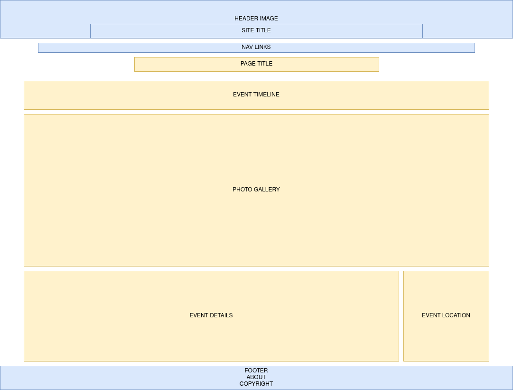
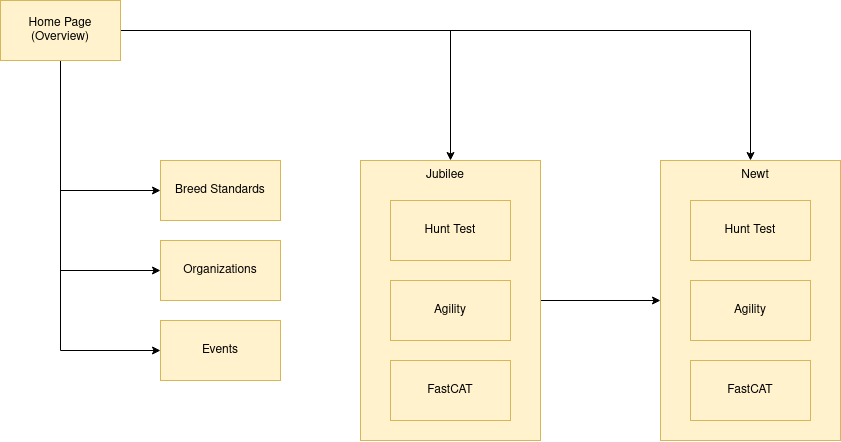

Logan Feid ◊ ITIS3135 ◊ Lemon Fish
Project Design
Project Overview
Application Description and Purpose:
Intended Users:
Overview of Content:
Client Information
Client Name:
Client Affiliations:
Client Email Address:
Client Phone Number:
Wireframe
Wireframe Design

The default page design.
Site Map
Site Map

WIP Site Map
Page Design
Home Page
Page Purpose: Give overview of site organization and content.
Audience and Users: People interested in the breed or who want to look
up specific events.
Page Content: Text containing brief overview of the breed and dogs.
Data Entry: N/A
Data Validation: N/A
Input/Hyperlinks/Dropdown: Links to the dogs' main about page.
Page Actions: N/A
Notes: N/A
Breed Standards
Page Purpose: Explain the breed standard.
Audience and Users: New users who are unfamiliar with wirehaired
pointers.
Page Content: The breed standard according to the AKC.
Data Entry: N/A
Data Validation: N/A
Input/Hyperlinks/Dropdown: Specific standards should be hyperlinked to
the dog competitions that exemplify those standards.
Page Actions: N/A
Notes: N/A
Organizations
Page Purpose: Give examples of prominent organizations and their
contact information.
Audience and Users: New users who want to get in contact with pointing
organizations.
Page Content: Table directory of prominent organizations featuring
pointing dogs.
Data Entry: N/A
Data Validation: N/A
Input/Hyperlinks/Dropdown: N/A
Page Actions: N/A
Notes: N/A
Events
Page Purpose: Explain what each event entails.
Audience and Users: New users unfamiliar with the requirments of an
ability test.
Page Content: A table with the event, followed by an explanation of
what happens during it and possible outcomes.
Data Entry: User should be able to search the name of an event.
Data Validation: Input must be in list.
Input/Hyperlinks/Dropdown: Events should be hyperlinked to the dog
that excelled in them.
Page Actions: N/A
Notes: N/A
Jubi/Newt Hunt Test
Page Purpose: Show when the event took place, some relevant photos,
the location of the event, and a brief summary.
Audience and Users: Users curious about the dog' accomplishments.
Page Content: A timeline with the date of the event, photos, a map,
and a brief bullet summary.
Data Entry: N/A
Data Validation: N/A
Input/Hyperlinks/Dropdown: User should be able to switch to the other
dog's page for comparison.
Page Actions: Photos should be organized into a clickable gallery.
Notes: N/A
Jubi/Newt Agility Test
Page Purpose: Show when the event took place, some relevant photos,
the location of the event, and a brief summary.
Audience and Users: Users curious about the dog' accomplishments.
Page Content: A timeline with the date of the event, photos, a map,
and a brief bullet summary.
Data Entry: N/A
Data Validation: N/A
Input/Hyperlinks/Dropdown: User should be able to switch to the other
dog's page for comparison.
Page Actions: Photos should be organized into a clickable gallery.
Notes: N/A
Jubi/Newt FastCAT
Page Purpose: Show when the event took place, some relevant photos,
the location of the event, and a brief summary.
Audience and Users: Users curious about the dog' accomplishments.
Page Content: A timeline with the date of the event, photos, a map,
and a brief bullet summary.
Data Entry: N/A
Data Validation: N/A
Input/Hyperlinks/Dropdown: User should be able to switch to the other
dog's page for comparison.
Page Actions: Photos should be organized into a clickable gallery.
Notes: N/A
Dynamic Functionality
All pages with a type of test should have photos from that event in an
interactive slideshow. Similar functionality can be found at this
site .
All pages with a type of test should give the location of that event
on an embedded map. Similar functionality can be found at this
site .
All pages with a type of test should have a very basic timeline
showing when the event(s) took place. Similar functionality can be
found at this
site .